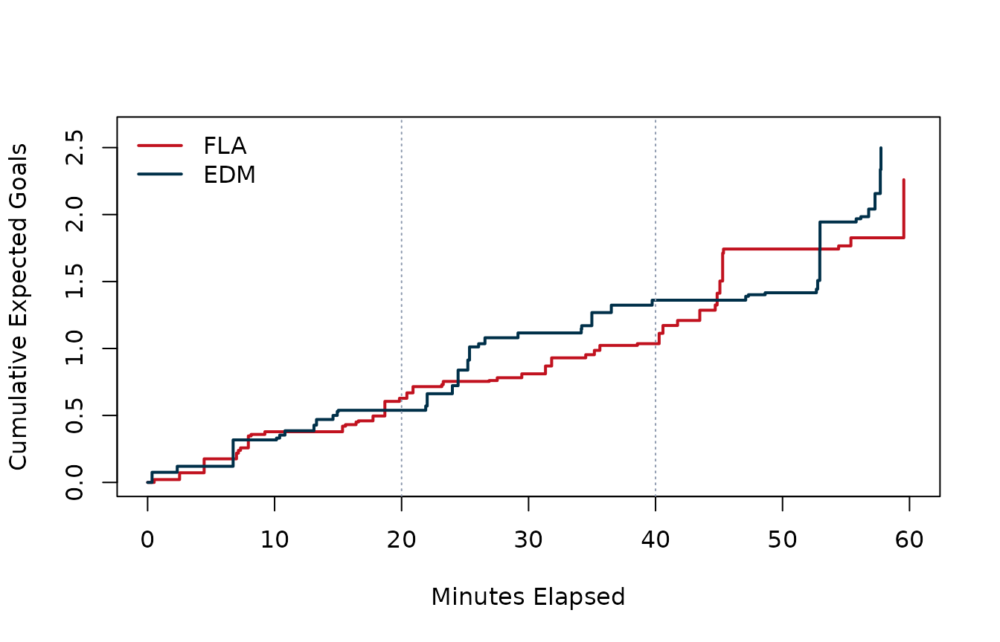
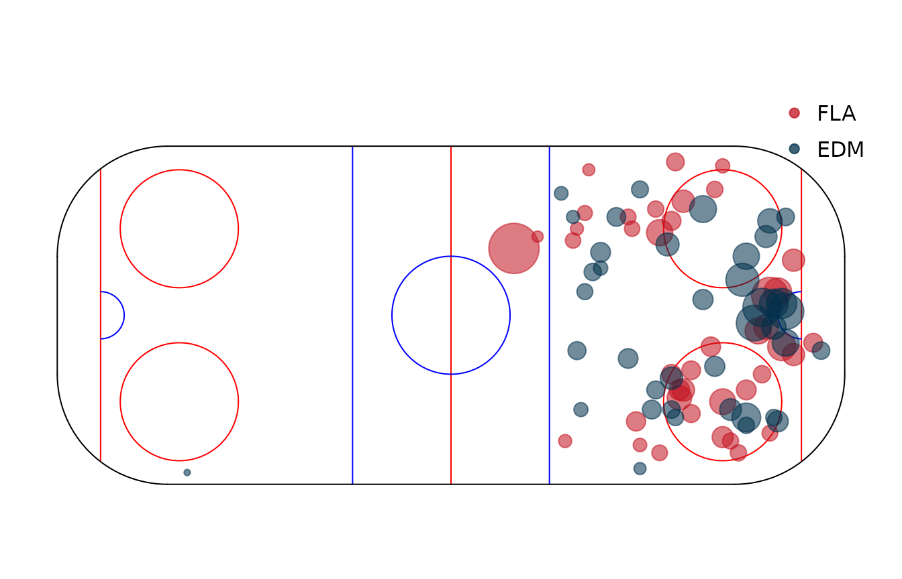

What Separated Florida and Edmonton in Game 7?
Source:vignettes/game-7-shot-quality.Rmd
game-7-shot-quality.RmdOverview
Florida beat Edmonton 2-1 in Game 7 of the 2024 Stanley Cup Final,
and the result instantly entered hockey memory as one of those games
that felt like it might hinge on a single bounce. That is
exactly why it is such a good guided example. A one-goal final score
leaves room for multiple stories. Maybe Florida truly carried play and
deserved the win. Maybe Edmonton created just as much and lost on
finishing. Maybe the game was close on everything, including chance
quality. The only way to separate those stories is to walk from the
scoreboard down into the event log. This example uses
nhlscraper::gc_summary(),
nhlscraper::gc_pbp(),
nhlscraper::game_rosters(), and
nhlscraper::calculate_expected_goals() to reconstruct the
game at the chance level. We will move from team totals, to period
context, to the biggest individual looks, and finally to two visuals
that show how the game breathed.
Pull Game Summary and Play-By-Play
We work from the final itself, Game 7 of the 2024 Final
(2023030417).
# Pull summary, play-by-play, and roster context.
game_summary <- nhlscraper::gc_summary(2023030417)
pbp_xg <- nhlscraper::calculate_expected_goals(
nhlscraper::gc_pbp(2023030417)
)
if (!('xG' %in% names(pbp_xg))) {
stop(
paste(
"calculate_expected_goals() did not return an xG column during article build.",
"This usually means the loaded nhlscraper namespace is stale or the scorer hit",
"a runtime error and returned the input unchanged."
)
)
}
rosters <- nhlscraper::game_rosters(2023030417)
# Build team and player labels.
home_id <- game_summary[['homeTeam']][['id']]
away_id <- game_summary[['awayTeam']][['id']]
home_abbrev <- game_summary[['homeTeam']][['abbrev']]
away_abbrev <- game_summary[['awayTeam']][['abbrev']]
rosters[['playerFullName']] <- paste(
rosters[['playerFirstName']],
rosters[['playerLastName']]
)
rosters[['teamTriCode']] <- ifelse(
rosters[['teamId']] == home_id,
home_abbrev,
away_abbrev
)
# Keep shot events with positive xG.
shots <- pbp_xg[!is.na(pbp_xg[['xG']]) & pbp_xg[['xG']] > 0, , drop = FALSE]
roster_match <- match(shots[['shootingPlayerId']], rosters[['playerId']])
shots[['playerFullName']] <- rosters[['playerFullName']][roster_match]
shots[['teamTriCode']] <- rosters[['teamTriCode']][roster_match]
shots[['timeInPeriod']] <- sprintf(
'%02d:%02d',
shots[['secondsElapsedInPeriod']] %/% 60,
shots[['secondsElapsedInPeriod']] %% 60
)This is already a powerful workflow. With one summary call, one play-by-play call, one roster call, and one modeling helper, the game opens up from scoreline to process.
Start With Scoreboard Context
Before getting fancy, it helps to put the official result and the xG estimate side by side.
# Summarize team-level scoreboard and xG results.
team_table <- data.frame(
team = c(home_abbrev, away_abbrev),
goals = c(
game_summary[['homeTeam']][['score']],
game_summary[['awayTeam']][['score']]
),
shotsOnGoal = c(
game_summary[['homeTeam']][['sog']],
game_summary[['awayTeam']][['sog']]
),
xG = c(
sum(shots[['xG']][shots[['eventOwnerTeamId']] == home_id], na.rm = TRUE),
sum(shots[['xG']][shots[['eventOwnerTeamId']] == away_id], na.rm = TRUE)
)
)
team_table[['xGPerShot']] <-
team_table[['xG']] / team_table[['shotsOnGoal']]
make_table(
team_table,
caption = 'Game 7 team context: score, shots on goal, and expected goals.'
)| team | goals | shotsOnGoal | xG | xGPerShot |
|---|---|---|---|---|
| FLA | 2 | 21 | 2.260 | 0.108 |
| EDM | 1 | 24 | 2.499 | 0.104 |
The result and the process point in the same direction, but only narrowly. Florida edges Edmonton in goals, edges Edmonton in raw xG, and edges Edmonton in xG per shot. Nothing in this table looks like domination. It looks like a deserved win in a game where the margin stayed small all night.
Break the Night Into Periods
Game 7s rarely play with a single rhythm from start to finish. One team can own the first period, another can chase late, and the game can still end within one chance. Period-level xG helps show where the pressure actually accumulated.
# Summarize xG by period and team.
period_data <- data.frame(
periodNumber = shots[['periodNumber']],
eventOwnerTeamId = shots[['eventOwnerTeamId']],
xG = shots[['xG']]
)
period_summary <- aggregate(
xG ~ periodNumber + eventOwnerTeamId,
data = period_data,
FUN = sum
)
period_ids <- sort(unique(shots[['periodNumber']]))
period_table <- data.frame(period = period_ids)
home_match <- match(
period_ids,
period_summary[['periodNumber']][period_summary[['eventOwnerTeamId']] == home_id]
)
away_match <- match(
period_ids,
period_summary[['periodNumber']][period_summary[['eventOwnerTeamId']] == away_id]
)
period_table[[paste0(home_abbrev, '_xG')]] <-
period_summary[['xG']][period_summary[['eventOwnerTeamId']] == home_id][home_match]
period_table[[paste0(away_abbrev, '_xG')]] <-
period_summary[['xG']][period_summary[['eventOwnerTeamId']] == away_id][away_match]
period_table[is.na(period_table)] <- 0
make_table(
period_table,
caption = 'Expected goals by period in Game 7.'
)| period | FLA_xG | EDM_xG |
|---|---|---|
| 1 | 0.628 | 0.539 |
| 2 | 0.408 | 0.822 |
| 3 | 1.224 | 1.138 |
Florida’s biggest push arrives in the third period. That matters because it matches the feel of the game: Edmonton kept hanging around, but Florida generated the most forceful late stretch and did enough to keep the Oilers from turning their chase into an equalizer.
Surface the Biggest Chances
Totals are useful, but they can still feel abstract. One of the nicest things about working directly from the event log is that you can ask which specific looks drove the game.
# Show largest individual shot-quality events.
chance_idx <- order(-shots[['xG']])
chance_table <- data.frame(
player = shots[['playerFullName']][chance_idx],
team = shots[['teamTriCode']][chance_idx],
period = shots[['periodNumber']][chance_idx],
timeInPeriod = shots[['timeInPeriod']][chance_idx],
xCoordNorm = shots[['xCoordNorm']][chance_idx],
yCoordNorm = shots[['yCoordNorm']][chance_idx],
xG = shots[['xG']][chance_idx]
)
chance_table <- utils::head(chance_table, 10)
make_table(
chance_table,
caption = 'Highest-xG individual chances in Game 7.',
digits = 3
)| player | team | period | timeInPeriod | xCoordNorm | yCoordNorm | xG |
|---|---|---|---|---|---|---|
| Evan Rodrigues | FLA | 3 | 19:33 | 16 | 17 | 0.434 |
| Zach Hyman | EDM | 3 | 12:56 | 79 | 2 | 0.232 |
| Sam Bennett | FLA | 3 | 05:17 | 81 | 5 | 0.208 |
| Zach Hyman | EDM | 3 | 12:57 | 85 | 1 | 0.205 |
| Mattias Janmark | EDM | 1 | 06:44 | 77 | -2 | 0.197 |
| Mattias Ekholm | EDM | 3 | 17:45 | 74 | 9 | 0.162 |
| Mattias Ekholm | EDM | 3 | 17:42 | 84 | 3 | 0.130 |
| Leon Draisaitl | EDM | 2 | 04:27 | 75 | -26 | 0.116 |
| Connor McDavid | EDM | 3 | 17:17 | 82 | 3 | 0.116 |
| Matthew Tkachuk | FLA | 1 | 18:41 | 84 | -8 | 0.109 |
That table is a nice reminder that a one-game study can still be concrete. Instead of saying “Florida had a slight edge,” you can point to the exact attempts that shaped the edge and where they came from on the ice.
Plot the Cumulative xG Race
The cumulative view shows whether the game felt close because both teams traded dangerous looks, or because one team held a long territorial edge that never quite broke the score open.
# Build cumulative xG paths for both teams.
build_cum_path <- function(team_id) {
team_idx <- shots[['eventOwnerTeamId']] == team_id
team_shots <- data.frame(
eventId = shots[['eventId']][team_idx],
secondsElapsedInGame = shots[['secondsElapsedInGame']][team_idx],
xG = shots[['xG']][team_idx]
)
team_shots <- team_shots[order(
team_shots[['secondsElapsedInGame']],
team_shots[['eventId']]
), ]
data.frame(
minutes = c(0, team_shots[['secondsElapsedInGame']] / 60),
cumXG = c(0, cumsum(team_shots[['xG']]))
)
}
home_path <- build_cum_path(home_id)
away_path <- build_cum_path(away_id)
graphics::plot(
home_path[['minutes']],
home_path[['cumXG']],
type = 's',
lwd = 2,
col = '#c1121f',
xlim = c(0, 60),
ylim = c(0, max(c(home_path[['cumXG']], away_path[['cumXG']])) * 1.05),
xlab = 'Minutes Elapsed',
ylab = 'Cumulative Expected Goals'
)
graphics::lines(
away_path[['minutes']],
away_path[['cumXG']],
type = 's',
lwd = 2,
col = '#003049'
)
graphics::abline(v = c(20, 40), lty = 3, col = '#8d99ae')
graphics::legend(
'topleft',
legend = c(home_abbrev, away_abbrev),
col = c('#c1121f', '#003049'),
lwd = 2,
bty = 'n'
)
Cumulative expected goals in Game 7 of the 2024 Stanley Cup Final.
The lines stay close for almost the entire game. Florida pulls slightly ahead, then widens that edge late, but the overall shape is still a race rather than a runaway. That makes this final a clean example of a winner who both earned the result and still lived inside a narrow margin.
Plot Shot Geography
The rink view adds one more layer. A chance model tells us how dangerous the looks were. A shot map shows where those looks came from.
# Split shot map inputs by team.
home_shots <- shots[shots[['eventOwnerTeamId']] == home_id, ]
away_shots <- shots[shots[['eventOwnerTeamId']] == away_id, ]
nhlscraper::draw_NHL_rink()
graphics::points(
home_shots[['xCoordNorm']],
home_shots[['yCoordNorm']],
pch = 19,
col = grDevices::rgb(0.76, 0.07, 0.12, 0.55),
cex = 0.6 + 7 * sqrt(home_shots[['xG']])
)
graphics::points(
away_shots[['xCoordNorm']],
away_shots[['yCoordNorm']],
pch = 19,
col = grDevices::rgb(0.00, 0.19, 0.29, 0.55),
cex = 0.6 + 7 * sqrt(away_shots[['xG']])
)
graphics::legend(
'topright',
legend = c(home_abbrev, away_abbrev),
pch = 19,
col = c(
grDevices::rgb(0.76, 0.07, 0.12, 0.75),
grDevices::rgb(0.00, 0.19, 0.29, 0.75)
),
bty = 'n'
)
Shot-quality map for Game 7. Point size scales with expected goals.
The map reinforces the same read as the cumulative chart. Florida did not swamp Edmonton with endless pressure, but the Panthers owned just a little more of the dangerous interior. In a 2-1 Game 7, that is often the whole story.
What We Learned
Florida’s win was narrow, but it was not random. The Panthers
generated slightly more xG, carried the stronger third-period push, and
owned a small edge in dangerous interior looks. Edmonton stayed within
range all the way through, which is why the game felt so tense, but the
underlying shot-quality story still leans Florida. This is also a good
showcase of the package itself. nhlscraper lets you start
with a game everybody remembers, scrape the event log, attach an xG
model, and turn a familiar score into a richer explanation of
why the score looked the way it did.